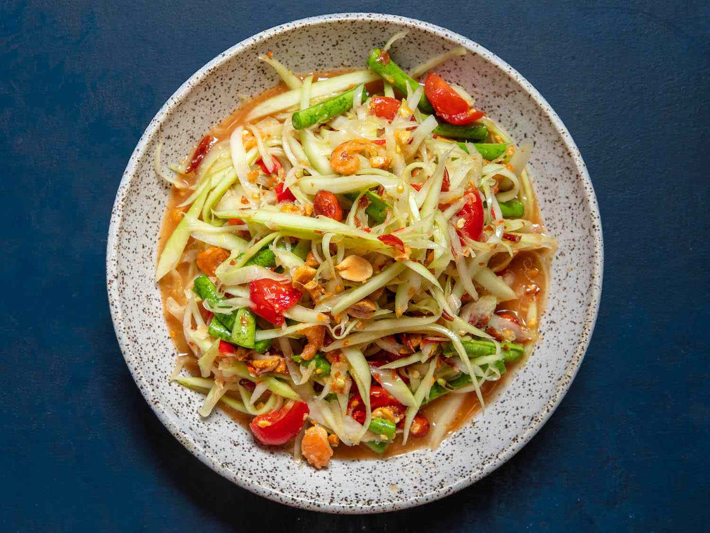

Som Tum

Credit to Serious Eats for the photo!
Som Tum is a traditional Thai salad made of green papaya. Commonly served by street vendors across the country, there are a number of different ways this dish can be prepared depending on the region.
This recipe is a relatively standard som tum inspired by the street vendors I frequented while living in Thailand.
Equipment
- A large mortar and pestle (kruk) like the one linked here
- Chef's knife
- Skillet (stainless steel, non-stick or cast iron all work)
- Cutting board
- Julienne peeler
Ingredients
- 1x Green papaya
- 2 - 3 tbsps of fish sauce
- 3x fresh limes to juice
- Bird's eye chilies (as little as 0 as many as you want)
- 3 cloves of garlic
- 5-7 cherry tomatoes or 1 roma tomato
- 1 stalk of long bean (or 3-4 green beans)
- 2 tbsps unsalted, blanched red or white peanutes to toast
- 1 tbsp Dried shrimp
- 1-2 tbsps Palm sugar (white sugar will work in it's place)